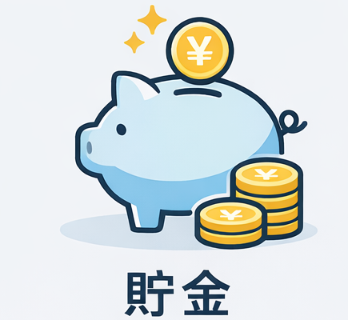
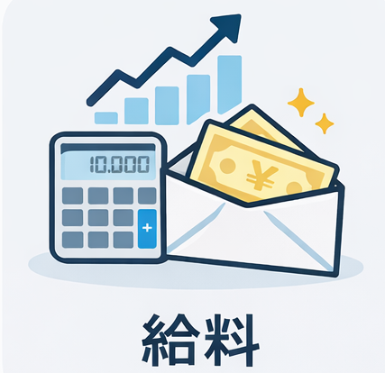
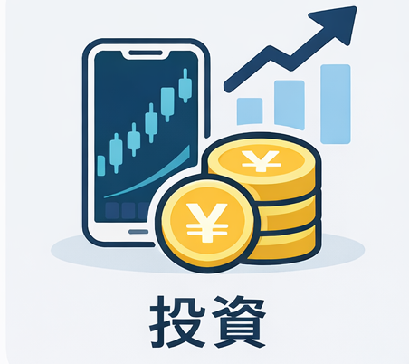

将来が不安。でも投資は怖い人へ｜貯金100万円からの最初の一歩
なぜ今“貯金があるのに不安”なのか

貯金が100万円前後あっても、不安が消えないのは普通です。
給料は急に増えにくい一方で、物価はゆっくりと上がり続けています。
「今は生活できている」と「この先も安心できる」は、実は別の話です。
まず大前提として、生活費の数か月分は“守るお金（生活防衛資金）”。
それ以外が“試せるお金（余剰資金）”です。
投資が怖い人ほど、この2つを分けるだけで気持ちはかなり軽くなります。
用語が不安な人は、まずは最低限の基礎だけ確認しておくと安心です。
→ 株を始める初心者向けの基礎知識を見る
「給料が低いから投資は無理」と諦めていませんか？

結論から言うと、最初の一歩に“高い給料”は必要ありません。
大切なのは金額よりも「失敗しにくい形で慣れること」です。
投資が怖いのは、センスがないからでも、向いていないからでもありません。
多くの場合、「知らないこと」が恐怖になっているだけです。
この記事では、不安を減らしながら進む順番だけを整理します。
投資が怖い理由は、ほとんどが3つに分解できる
- ① 何を買えばいいか分からない
- ② 大損しそうで怖い
- ③ タイミングを間違えそう
でもこれは“性格”の問題ではなく、手順で解決できます。
いきなり増やそうとしないこと。
小さく始めて、慣れること。
それだけで失敗の確率は大きく下がります。
最初の一歩は「相性」で選ぶ
最初は「増やす」よりも「慣れる」が正解です。
いきなり大金を入れる必要はありません。
口座を作って、画面を触って、少額で体験する。
それだけでも十分な前進です。


円だけに偏らせない、という考え方
不安の正体は「日本がダメ」という話ではありません。
問題は“円だけに偏ること”です。
生活は日本、資産の一部は世界。
そう考えると、海外株は“攻め”ではなく“守りの分散”になります。
海外株を含めた違いを整理したい人は、一覧で眺めるだけでも視界がクリアになります。
→ 証券サービスの料金・対応範囲を表で確認する
海外株まで視野に入れるなら「取扱市場の広さ」が答えになる
海外株に進むとき、最初に見るべきは「手数料の細かい違い」よりも、
そもそも“買える市場がどれだけ広いか”です。
米国株だけなら選択肢は多いですが、欧州株やアジア株まで視野に入れると、
取扱範囲の広さがそのまま「分散のしやすさ」になります。
生活不安が出発点なら、海外株は“攻め”ではなく守りの分散として考える方が自然です。
その条件（取扱市場が広い）を満たす選択肢のひとつが、Saxo証券です。
※以下は「取扱市場が広い口座」の一例です。内容は公式情報を必ずご確認ください。

まだ決めきれないのは普通です。いったん一覧で「できること」を確認して、軸が固まってから選ぶのが安全です。

まとめ：怖いままでも、前には進める
投資は「勇気がある人」がやるものではありません。
不安がある人ほど、小さく、慎重に始めればいいだけです。
生活防衛資金を確保する。
少額で国内から慣れる。
余裕が出たら世界にも目を向ける。
いきなり完璧を目指さなくて大丈夫です。
まずは“口座を作る”という小さな一歩から始めてみてください。
ご利用にあたっての注意事項
本記事は情報提供を目的としており、投資の勧誘を目的としたものではありません。株式・投資信託・外国証券等の取引は元本保証がなく、相場変動等により損失が生じる場合があります。取引開始前に、契約締結前交付書面や商品説明書、目論見書等を必ずご確認のうえ、ご自身の判断と責任でお取引ください。
最終更新日：2026-02-17